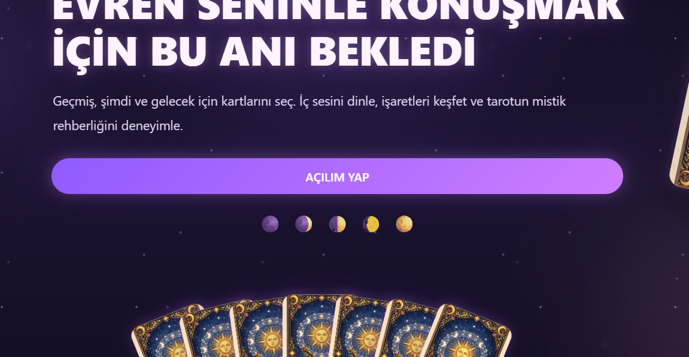

Yazılım & Web
Geliştirme alanları
Web teknolojileriMakine öğrenmesiProblem çözmeOyun tasarımı
Karmaşık fikirleri sade, işlevsel ve etkileyici dijital deneyimlere dönüştürüyorum. Kod, tasarım ve yapay zekânın kesişiminde üretmeyi seviyorum.
const engineer = {
student: 'Software Engineering',
university: 'MTÖÜ',
curiosity: '∞',
interests: [
'Web', 'ML', '3D'
]
};
// ideas → thoughtful software
01 / HAKKIMDA
Malatya Turgut Özal Üniversitesi Yazılım Mühendisliği öğrencisiyim. Yazılım geliştirmenin yanı sıra Blender ve AutoCAD ile 3D tasarım, yapay zekâ ve makine öğrenmesi alanlarına ilgi duyuyor; bu disiplinleri bir araya getirerek yenilikçi çözümler üretmeyi hedefliyorum. Problemleri analitik biçimde ele alıp kullanıcılar için anlaşılır ve işlevsel deneyimler tasarlamaya odaklanıyorum.
ODAK
Uçtan uca düşünme
YAKLAŞIM
Öğrenerek üretme
HEDEF
Gerçek etki yaratma
02 / YETENEKLER & ARAÇLAR
İlgi alanlarım farklı disiplinleri buluşturuyor. Aşağıdaki teknoloji listelerini kendi deneyimine göre güncelleyebilirsin.
Geliştirme alanları
Görsel düşünme araçları
Örnek etiketler · düzenle
03 / SEÇİLİ ÇALIŞMALAR
Projelerini, ekran görüntülerini ve bağlantılarını buraya ekle.

WEB UYGULAMASIGeçmiş, şimdi ve gelecek için kart seçimi ve mistik tarot rehberliği sunan etkileşimli web deneyimi.
 OYUN & 3D
OYUN & 3DModelleme sürecini, tasarım kararlarını ve proje amacını burada özetle.
 WEB & ML
WEB & MLÖğrenci notlarını analiz ederek başarı eğilimlerini inceleyen makine öğrenmesi projesi.
Kart başlıkları, açıklamaları, görsel URL'leri ve bağlantıları örnektir; gerçek projelerinle değiştir.
04 / EĞİTİM
Yazılım Mühendisliği · Lisans
Eğitimine devam ediyor
05 / İLETİŞİM
Staj, iş fırsatları, proje iş birlikleri veya sadece merhaba demek için bana ulaşabilirsin.
✉ Direkt mesaj gönder↗osfatma6@gmail.com